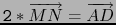
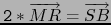
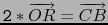
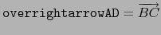

// dessin exo1 A:=point(2,2,0); B:=point(-2,2,0); C:=point(-3,-2,0); D:=point(1,-2,0); S:=point(0,0,4); polyedre(S,A,B,C,D); M:=milieu(S,A); N:=milieu(S,D); O:=milieu(A,C); P:=plan(O,M,N); Q:=plan(S,B,C); est_parallele(P,Q);Pour faire la démonstration avec Xcas, on tape :
// demo exo1 A:=point(a,b,c); B:=point(d,e,f); D:=point(u,v,w); C:=B+(D-A); //S:=isobarycentre(A,B,C,D)+t*cross(B-A,D-A); S:=point(k,l,m); M:=milieu(S,A); N:=milieu(S,D); O:=milieu(A,C); P:=plan(O,M,N); Q:=plan(S,B,C); est_parallele(P,Q);On obtient : 1
La démonstration géométrique :
Soit R le milieu de AB.
On a :
M est le milieu de SA et N est le milieu de SD, donc
MN est parallèle à AD et 2*MN=AD
M est le milieu de SA et R est le milieu de AB, donc
MR est parallèle à SB et 2*MR=SB
O est le milieu de AC et R est le milieu de AB, donc
OR est parallèle à CB et 2*OR=CB
ou encore :



La base ABCD est un parallélogramme donc :

On en déduit que MNOR est un parallélogramme dont le plan est
parallèle à la face SBC.